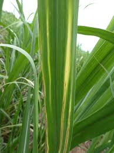
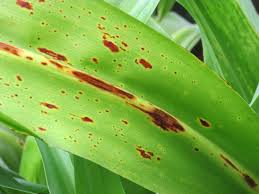
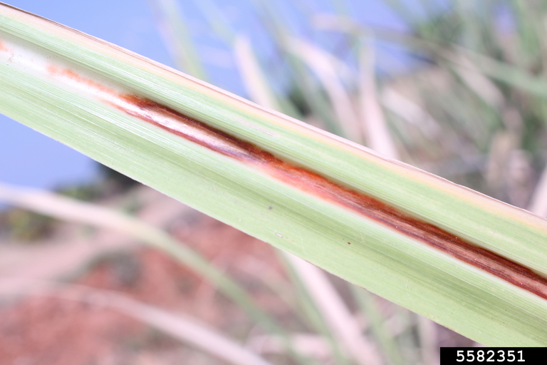
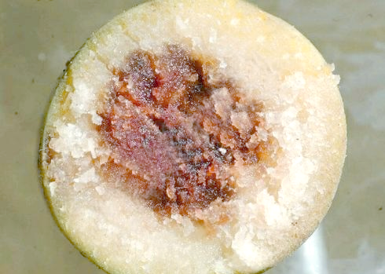
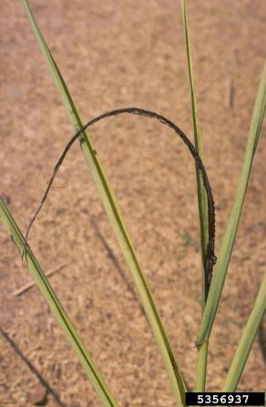
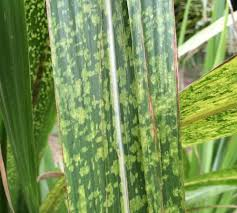
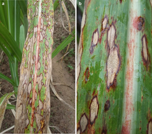
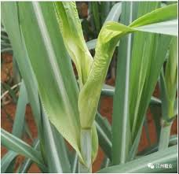

×


发病原因及症状：由白条病菌侵染引起，主要通过病苗、刀具和虫鼠传播。叶片上出现白色细长条斑，像铅笔线一样，严重时整株发白甚至枯死。
危害后果：使植株衰弱，影响正常生长和产量，严重时造成大片减产。
防治方法：严格检疫种苗，发现病株立即拔除，病区不留种，加强工具消毒和田间管理。

发病原因即症状：由赤斑病菌侵染引起，病菌在温暖潮湿环境下易传播。叶片先出现黄色小斑，后扩大并转为红色或红褐色斑块，病斑可融合成片。
危害后果：破坏叶片功能，降低光合作用效率，使植株早衰，影响产量。
防治方法：选抗病品种，及时清除病叶，收获后清洁田间并烧毁病残体，发病初期喷药控制。

发病原因即症状：由赤腐病菌侵染引起，病菌可通过种茎、病残体、雨水和伤口传播。病叶中肋先出现红色条斑，后逐渐扩大，茎秆内部组织也会变红腐烂。
危害后果：导致植株腐烂、倒伏、干枯，显著降低产量和含糖量。
防治方法：选用抗病品种，减少虫害和机械伤口，清除病残体，发现病株及时处理，避免病蔗作种。

发病原因即症状：由凤梨病菌侵染蔗种切口或伤口引起，病菌多从土壤或带菌种苗传播。病蔗切口先发红，后变黑腐烂，常带有类似凤梨的气味，严重时不能萌芽。
危害后果：造成烂种、缺苗、出苗差，影响整田长势，降低后期产量。
防治方法：选健康蔗种，播种前对蔗种进行药剂处理，减少机械损伤和伤口感染，病残体及时清理。

发病原因即症状：主要由黑穗病菌侵染引起，多在病苗、土壤和风雨传播下发病。病株常表现为植株矮小、节间缩短、叶片细弱，后期在顶部抽出黑色鞭状穗，散出大量黑粉。
危害后果：影响甘蔗正常生长，造成植株退化、减产严重，病株基本失去种植价值。
防治方法：选用抗病品种，严禁用病株留种，发现病株及时拔除并销毁，重病田尽量避免宿根连作。

发病原因即症状：由花叶病毒侵染引起，主要通过带病种苗和蚜虫传播。叶片出现黄绿相间的条纹、斑驳或花叶状症状，植株常表现矮化、分蘖少。
危害后果：影响植株正常生长，造成减产、降糖，严重时整田长势不整齐。
防治方法：采用无病种苗和抗病品种，及时拔除病株，加强蚜虫防治，避免与易感禾本科作物混栽。

发病原因即症状：由黄斑病菌侵染引起，高温多湿条件下容易流行。叶片初期出现黄色小斑点，随后扩展成较大的黄斑，后期病斑可转为红褐色。
危害后果：叶片早枯，减少绿色叶面积，削弱光合作用，影响产量和糖分积累。
防治方法：加强田间管理，保持通风透光，清除病叶和病残体，必要时在发病初期喷药防治。

发病原因即症状：多由镰刀菌等真菌侵染引起，病菌常随病残体和气流传播。发病时心叶基部先黄化，随后出现红褐色条纹，叶片扭曲皱缩，严重时梢头腐烂。
危害后果：使甘蔗生长受阻，影响光合作用和糖分积累，严重时整株枯死。
防治方法：选抗病品种，合理施肥，避免偏施氮肥，及时清除病株和病残体，发病初期喷药防治。